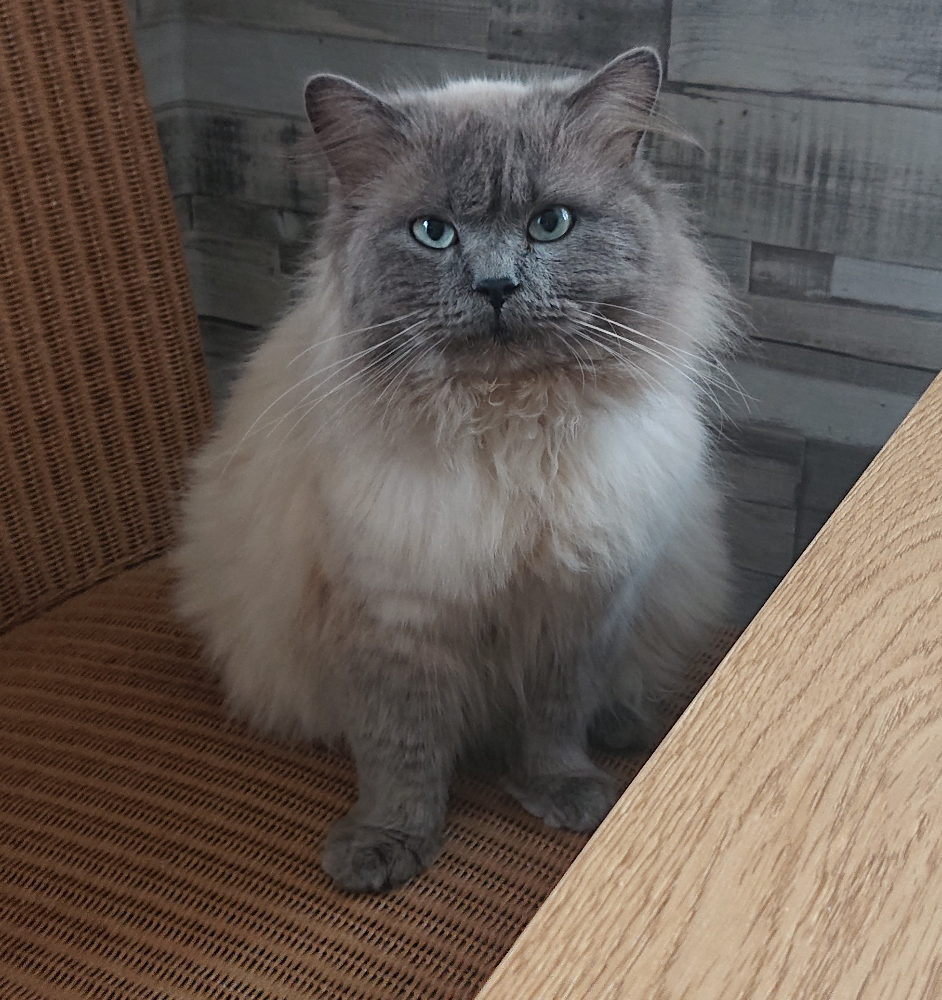

Страничка кота Барсика

Барсик — это озорной кот, который любит играть и гулять на свежем воздухе.
Он обожает лакомства и никогда не откажется от охоты на живую мышь.
Интересные факты о Барсике
- Барсик любит загорать на окне.
- Его любимая игрушка — мышка из войлока.
- Барсик всегда трётся о ноги хозяина, когда открывается баночка с кормом.
Личные предпочтения
- Корм: рыба, птица
- Игра: с мышкой
- Место для сна: на диване
| Категория |
Описание |
| Возраст |
3 года |
| Порода |
Британская |
| Любимое занятие |
Сон |
Перейти на страничку контактов